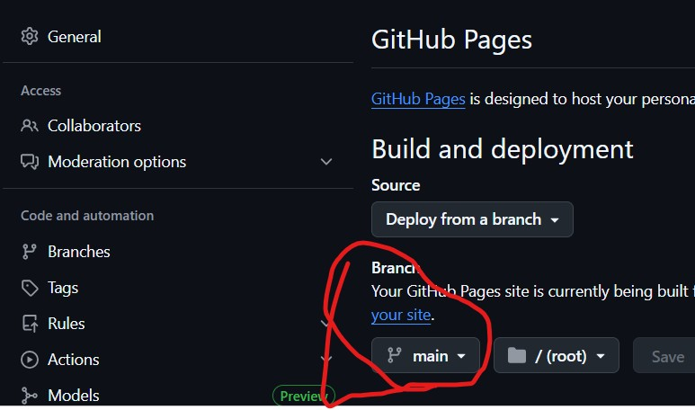

Her har jeg tenkt å skrive litt om Git og Github
Først noen nyttige tips for Git i VSCode:
Last ned vscode extension: GitLens som viser når du har commita ting
Hold alt og bruk piltast for å flytte linjer opp og ned
Vis git-mappa i din repository/folder i VS-Code:
ctrl+, for å åpne settings, skriv exclude i søkefeltet, kryss bort git**
Tilbake til toppen
Ny repository og første commits:
Finn mappa du skal jobbe med i filutforsker, høyreklikk og velg Git Bash here!
Eller åpne mappa i VS-Code, åpne git-bash i terminal og skriv
git init
Tilbake til toppen
Sett default branch til main i Git:
git branch -M main
git remote add origin
git push -u origin main
Dersom du har en gammel repo med master branch kan du endre navn på den slik:
git branch -m master main
Jeg hadde en gammel repo med master branch og måtte gjøre dette for å pushe til GitHub:
git branch -m main
git push -u origin main
Siden master fortsatt er standardgrein på github må jeg endre det før jeg går videre
Gå til repo på github.com, velg settings - General - Default branch -
switch to another branch - velg main
Nå kan du gå tilbake til VSCode og slette master greina lokalt:
git push origin --delete master
Om du bruker repoen som utgangspunkt for en hjemmeside på
github pages må du også endre default branch der:
Gå til repo på github.com, velg settings - Pages - Source - velg main branch

Tilbake til toppen
Det du gjør oftest (staging og committing):
Når du har gjort endringer i filene dine, må du først legge dem til
staging-området før du kan committe dem. Dette gjør du med kommandoen:
git add .
Deretter kan du committe endringene med en beskrivende melding:
git commit -m "Din beskrivende melding her"
Det er også mulig å committe direkte uten staging med:
git commit -a -m "Din beskrivende melding her"
P.S. om du adder alle filene med git add . kan du ikke skjule dem med .gitignore etterpå...
Tilbake til toppen
Branches i Git:
Dette er en meget nyttig funksjon i Git som gjør at du kan jobbe med flere
varianter av prosjektet ditt samtidig uten å påvirke hovedgreina (main).
For å lage en ny branch skriver du:
git branch nybranch
For å bytte til den nye greina skriver du:
git switch nybranch
For å se hvilke greiner du har og hvilken du er på skriver du:
git branch (det vises også nederst til venstre i VSCode)
Når du er ferdig med å jobbe på den nye greina og vil slå den sammen med main,
må du sjekke at det ikke er noen endringer som ikke er committa på den nye greina.
Deretter bytter du tilbake til main:
git switch main
Deretter slår du sammen den nye greina med main:
git merge nybranch
N.B! merk at den greina du er ferdig med fortsatt eksisterer etter merge,
og du kan slette den med: git branch -d nybranch
eller gi den nytt navn med: git branch -m nyttnavn
Tilbake til toppen
Angre staging (git add):
Når vi angrer noe vi har adda, eller får feilmelding/advarsel ved addding
har vi to valg: git reset som tar vekk filene fra staging eller git rm som
fjerner den fra både staging og sletter den fra mappa
freecodecamp
Kan jeg angre etter å stage den med git add . ?
Ja det er bare å skrive git restore --staged index.html
Når du har et git repository kan du for eksempel jobbe med samme hjemmeside
både på jobb-pc og privat-pc
Tilbake til toppen
Slette en fil lokalt og på GitHub:
For å slette en fil både lokalt og på GitHub kan du bruke:
git rm filnavn
git commit -m "Slettet filnavn"
git push origin main
Når vi skriver git push origin main (eller annen branch) vil
Github oppdatere (synkronisere) remote‑branchen til å matche
din lokale branch, og da vil filen forsvinne fra GitHub også.
NB! Pass på hva du laster opp til GitHub, spesielt om du jobber med
private prosjekter eller sensitive data. En slettet fil kan fortsatt
være tilgjengelig i commit-historikken, så for fullstendig fjerning må
du bruke mer avanserte Git-kommandoer som 'git filter-branch' eller
'BFG Repo-Cleaner'. Vær oppmerksom på at dette kan påvirke hele
repository-historikken og bør gjøres med forsiktighet.
Tilbake til toppen
Slette en repository:
For å slette et lokalt repository er det nok å slette .git mappa,
men du kan også velge å slette hele mappa med alle filene.
Kjør gjerne «git status» i git bash for å få melding om at den ikke
eksisterer lenger.
For å slette et Git-repository, navigerer du til innstillingene for det
nettbaserte repositoryet (f.eks. på GitHub) og finner "Danger Zone"
og deretter klikke på "Delete this repository"
Tilbake til toppen
# Lage en tag (annotated tag):
git tag -a v2.0 -m "Version 2.0 release"
git push origin v2.0 for å pushe tag til GitHub
# Slette feil tag lokalt og på GitHub:
git tag -d v1.0
på Github er det ganske enkelt å slette en tag via webgrensesnittet
Det står for eksempel antall branches og tags øverst i repoen
der du kan klikke på tags og slette den du ønsker
Tilbake til toppen
Status og log:
git diff navnpåfil.noe, som viser hva som er blitt forandret i filen.
Git status viser hvilke filer som er endret, lagt til eller slettet.
Git branch viser hvilken branch du er på.
Log i Git bør gjøres med oneline, slik: git log --oneline
git log fører til alt for lang liste med info som er vanskelig å lese.
Om du har et gammelt repo med mange commits kan du begrense antall linjer som vises:
git log --oneline -n 10 (eller et annent tall)
Om du kommer i piltast-modus i loggen kan du trykke q for å komme ut av den
det vet du om du trykker enter og ingenting skjer (kanskje står det (END) nederst)
Tilbake til toppen